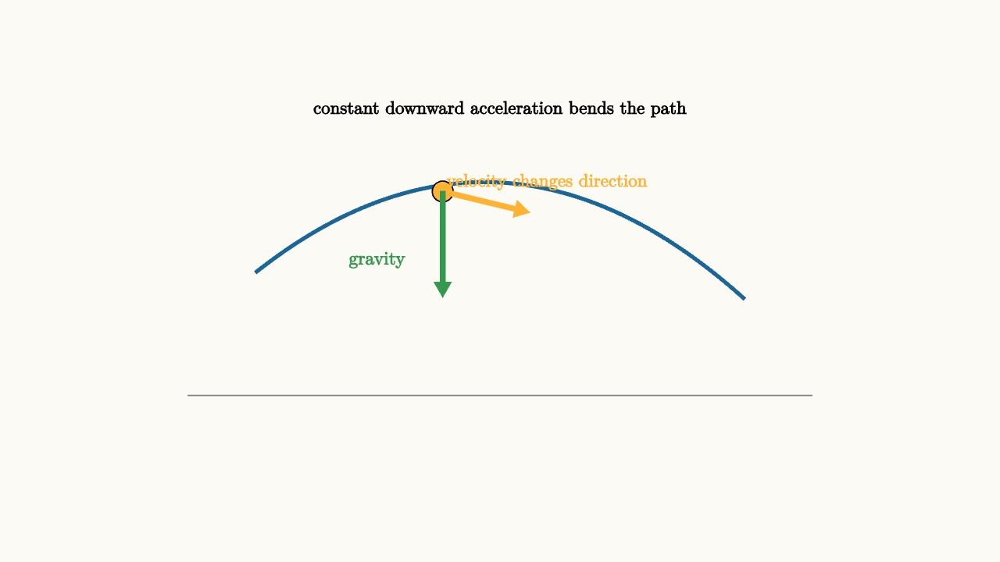

Gravity Makes Motion Curve
Throw a ball forward. For a short moment it seems to move mostly sideways. Then its path bends down. The forward motion did not need a forward force to keep going. Gravity supplied a downward acceleration the whole time, so the velocity kept gaining a downward component.
This is the cleanest way to read projectile motion. The horizontal and vertical parts of motion are linked by the same clock, but they obey different rules near Earth's surface. Ignoring air resistance,
and
So the horizontal velocity stays constant while the vertical velocity changes linearly:
Position follows by accumulating velocity:
The path is a parabola because one coordinate changes linearly with time and the other includes $t^2$.

source
background = [0.985, 0.98, 0.955, 1]
camera = Camera(4.8b)
mesh diagram = block {
. stroke{GRAY, 1} Line(start: [-3, -1.1, 0], end: [3, -1.1, 0])
. stroke{BLUE, 3} ExplicitFunc(|x| -0.18 * (x + 0.15) * (x + 0.15) + 0.95, [-2.35, 2.35, 160])
. fill{ORANGE} center{[-0.55, 0.86, 0]} Circle(0.1)
. color{ORANGE} Arrow(start: [-0.55, 0.86, 0], end: [0.28, 0.66, 0])
. color{GREEN} Arrow(start: [-0.55, 0.86, 0], end: [-0.55, -0.15, 0])
. center{[0.45, 0.95, 0]} color{ORANGE} Text("velocity changes direction", 0.62)
. center{[-1.18, 0.2, 0]} color{GREEN} Text("gravity", 0.64)
. center{[0, 1.65, 0]} Text("constant downward acceleration bends the path", 0.62)
}
"projectile curve"
play Fade(0.6)Velocity is tangent to the path. Gravity points downward. Those arrows differ, so gravity turns the velocity rather than simply making the object move straight down.
Independence is a clock statement
Textbooks often say horizontal and vertical motion are independent. That phrase means the horizontal equation can be solved without using the vertical equation, and the vertical equation can be solved without using the horizontal equation. Both still share the same time $t$.
If a ball is dropped from rest and another ball is launched horizontally from the same height at the same time, they hit the ground together in the ideal model. The launched ball travels sideways while falling, but its vertical motion has the same initial vertical velocity and the same vertical acceleration as the dropped ball.
This is a strong example of vector thinking. The horizontal component remembers the initial push. The vertical component records gravity's steady influence.
source
param launch = 0.95
background = [0.985, 0.98, 0.955, 1]
camera = Camera(4.8b)
let Projectile = |time, launch| block {
let x = -2.35 + 4.1 * time
let y = -1.05 + 2.05 * launch * time - 1.65 * time * time
. stroke{GRAY, 1} Line(start: [-2.8, -1.05, 0], end: [2.8, -1.05, 0])
. stroke{BLUE, 3} ExplicitFunc(|u| -1.05 + 2.05 * launch * ((u + 2.35) / 4.1) - 1.65 * ((u + 2.35) / 4.1) * ((u + 2.35) / 4.1), [-2.35, 1.75, 160])
. fill{ORANGE} center{[x, y, 0]} Circle(0.11)
. color{ORANGE} Arrow(start: [x, y, 0], end: [x + 0.8, y + 0.35 * launch - 0.55 * time, 0])
. color{GREEN} Arrow(start: [x, y, 0], end: [x, y - 0.82, 0])
}
"start with a launch"
mesh title = center{[0, 1.65, 0]} Text("gravity curves a sideways launch", 0.64)
mesh scene = Projectile(time: 0.18, launch: $launch)
play Write(0.8)
"advance the same clock"
scene = Projectile(time: 0.72, launch: $launch)
play Lerp(1.4)
"try a faster launch"
launch = 1.25
scene = Projectile(time: 0.72, launch: $launch)
play Lerp(1.0)
"turn falling into orbit"
scene = block {
. fill{alpha{0.2} BLUE} stroke{BLUE, 2} center{[0, -0.1, 0]} Circle(0.52)
. stroke{GRAY, 1.5} center{[0, -0.1, 0]} Circle(1.45)
. fill{ORANGE} center{[1.45, -0.1, 0]} Circle(0.1)
. color{ORANGE} Arrow(start: [1.45, -0.1, 0], end: [1.45, 0.72, 0])
. color{GREEN} Arrow(start: [1.45, -0.1, 0], end: [0.72, -0.1, 0])
. center{[0, 1.75, 0]} Text("orbit is falling around", 0.68)
}
play Trans(1.0)The final slide takes the same idea to a larger scale. An orbit is motion with enough sideways speed that falling keeps missing the planet. Gravity still points inward. The velocity stays tangent. Together they curve the path.
Universal gravity
Near Earth's surface, gravity is often summarized by a constant $g\approx 9.8\text{ m/s}^2$. That is a local approximation to Newton's universal law:
Every mass attracts every other mass. The force between Earth and a falling object has the same magnitude on both bodies. The object accelerates noticeably because its mass is small. Earth accelerates by an extremely tiny amount because its mass is huge.
The gravitational field near a mass points toward the source. Its strength decreases with distance squared. Farther from Earth, $g$ is weaker. This is why orbital mechanics uses the full inverse-square law rather than a constant downward acceleration.
Energy gives escape and orbit speeds
Gravity also has potential energy. For two masses separated by distance $r$,
The negative sign chooses zero potential energy at infinite separation. Bound orbits have negative total energy. To escape, an object needs enough kinetic energy to reach zero total energy.
For a circular orbit, gravity supplies the needed centripetal acceleration:
Canceling $m$ gives
The orbit speed depends on the central mass and radius, not on the orbiting object's mass. Satellites of different masses can share the same circular orbit speed at the same altitude.
Air resistance changes the story
Real projectiles move through air. Drag points opposite the motion and grows with speed. It reduces range, lowers the peak, and makes the path asymmetric. A baseball, a paper airplane, and a leaf each show the limits of the simple parabola.
That does not make the ideal model disposable. The ideal model isolates gravity's role. Once that is understood, drag can be added as another force. Good modeling often works this way: start with the clean dominant structure, then add effects that matter for the situation.
The lesson to keep
Gravity makes motion curve because it continually changes velocity. Near Earth's surface, the acceleration is approximately constant and downward, so projectile paths become parabolas. Around a planet, the direction of gravity changes from point to point, and falling can become orbit.
When a gravity problem feels tangled, separate the roles. Initial velocity sets the starting motion. Gravity changes velocity over time. Energy tells which heights, speeds, and escape possibilities are available. The curve is the visible record of a force that keeps steering the motion.